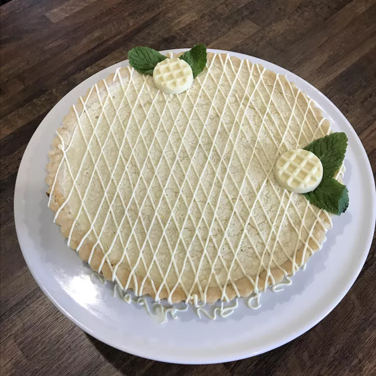

Home
Tis' the season for tangy tarts aka the best lemon tart ever

Description:
This tart is very lemony-flavored with a shortbread crust to die for! You can
make smaller slices so the tart yields 16 servings. Very decadent.
Ingredients
Crust:
- ¾ cup butter, at room temperature
- ½ cup white sugar
- ½ teaspoon vanilla extract
- 1 pinch salt
- 1 ¾ cups all-purpose flour
Filling:
- 1 ½ cups white sugar
- 3 large eggs
- ½ cup freshly squeezed lemon juice
- ½ cup all-purpose flour
- 1 tablespoon lemon zest
- 1 teaspoon confectioners' sugar, or to taste
Steps:
- Make crust: Combine butter, sugar, vanilla, and salt in the mixing bowl of a stand mixer;
mix ingredients thoroughly with a paddle attachment. Mix flour into butter mixture to make a smooth dough.
- Press dough into a 9-inch tart pan; refrigerate crust for 30 minutes.
- Preheat the oven to 350 degrees F (175 degrees C).
- Bake crust in the preheated oven until light golden brown, 15 to 20 minutes.
- Make filling: Whisk together sugar, eggs, lemon juice, flour, and lemon zest in a large bowl until smooth.
- Pour lemon filling into crust. Cover edges of crust with strips of aluminum foil to prevent burning.
- Bake tart until filling is set, about 20 minutes. Cool completely and dust with confectioners' sugar.